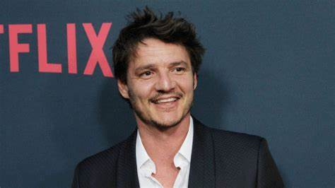

¿Qué pasaría si ese parásito mutase y pudiera soportar altas temperaturas?


Aquí os enseñamos a algunos de los protagonistas de la serie de The Last of Us
Pedro Pascal es Joel Miller
Pedro Pascal nació en Santiago de Chile el 2 de abril de 1975, el cual interpretará a Joel, protagonista del primer videojuego y protector de Ellie, que viajará por una América postapocalíptica en busca de una cura para el problema de los zombies.
Pascal se dio a conocer como Oberyn Martell en Juego de Tronos y ha seguido sumando grandes papeles como Javier Peña en Narcos y Din Djarin en The Mandalorian.

Bella Ramsey es Ellie
Bella Ramsey mnacida en Nottinghamshire, Inglaterra, 30 de septiembre de 2003, esta acompañará a Pascal en su aventura como Ellie, la joven superviviente y la respuesta al problema postapocalíptico.
Al igual que Pascal, Bella Ramsey se dio a conocer en Juego de Tronos interpretando a la joven gobernante Lyanna Mormont. Aunque en un principio no convenció a los fans, poco a poco se ha ido haciendo con su aceptación.
Nico Parker es Sarah
Nico Parker nació en Londres, el 9 de diciembre de 2004, para interpretar a Sarah, la hija de Joel. Se trata de una de las actrices menos conocidas del reparto, cuyo trabajo más destacado hasta ahora está en Dumbo de 2019.
Gabriel Luna es Tommy
Gabriel Luna nació en Austin, Texas; el 5 de diciembre de 1982 para interpretar a Tommy, el hermano de Joel, un antiguo soldado que trata de sobrevivir en un mundo postapocalíptico.
The Last of Us supondrá el regreso de Luna a HBO tras su papel en la segunda temporada de True Detective, aunque quizá sea más conocido por interpretar a Robbie Reyes, alias Ghost Rider, en Agents of SHIELD de Marvel.

Merle Dandridge es Marlene
Merle Dandridge es la única del reparto original del videojuego que interpretará a su personaje en la serie.
Puso voz a Marlene en The Last of Us y en un flashback de The Last of Us Parte II, y ahora retoma su papel de líder de las Luciérnagas en la serie de HBO. Ha aparecido en series como Sons of Anarchy y NCIS.

Anna Torv es Tess
Anna Torv es probablemente uno de los integrantes más importantes del reparto junto a Pedro Pascal.
Torv interpretará a Tess, la compañera contrabandista que acompaña a Joel al comienzo del videojuego de 2013. Ayuda a Joel a comenzar su aventura con Ellie.
Se ha confirmado que este personaje se beneficiará de los cambios de la serie con respecto al videojuego, pues Tess será un personaje mucho más recurrente.
Nick Offerman es Bill
Nick Offerman interpretará a uno de los personajes más cascarrabias del videojuego: Bill, un superviviente loco por las trampas que vive en un pequeño pueblo de Boston.
Quienes hayan jugado al videojuego de 2013 seguro que lo recordarán, pues es imposible olvidar a una persona tan obsesionada por la seguridad. Además, tuvo sus diferencias con Ellie.
Offerman ha actuado en películas como November, Cursed, Miss Congeniality 2: Armed and Fabulous, Sin City, The Men Who Stare at Goats, y The Kings of Summer.
Murray Barlett es Frank.
Murray Bartlett ha sido elegido para interpretar a Frank, el compañero de Bill mencionado brevemente en el juego.
Es posible que este sea uno de los personajes que se vea más beneficiado por los cambios de la serie con respecto al videojuego.
Puedes reconocer a Bartlett por su aparición en Iron Fist de Marvel.